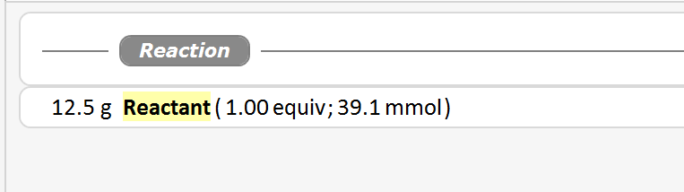

3) Add Materials
At this stage, our experiment protocol contains the default workflow separator "Reaction" and the reference starting material.

Now let's add a reagent, say 'Triethylamine'. The central place for adding materials is the Addition Toolbar at the bottom of the protocol area. Move the mouse over the Add Material button, and the popup menu below opens.

Select the Reagent item, which subsequently opens the Add Reagent dialog. Enter '1.5' equivalents (eq), then type 'tri' into the name field. This opens a list of reagents from the built-in materials database starting with the currently typed characters. While typing additional characters, the list adapts to the more specific filter.
|
Tip: Check the Subtext box next to the material name to search for materials containing the typed characters anywhere within their name. Thus, typing 'brom' also will find materials like 'Methylbromide' |

Select the 'Triethylamine' item - either by clicking it, or by selecting it via the up/down arrow keys followed by RETURN.
This populates the molecular weight and the density fields of the reagent with its stored values.
|
The Materials Database: All materials and their properties (molecular weight, density, etc.) ever entered into the ELN are remembered by a self-learning materials database. When the properties of a stored material are changed, then these become its current database properties. The database comes pre-configured with a list of ca. 200 commonly used materials with cross-checked properties. In the materials dialog, such materials are marked by a "Preset" label and their cross-checked properties are read-only. |
When done, click OK. Alternatively, you also can CTRL-click a material to close the dialog and add the reagent in one step. Our specified reagent now appears as a protocol element, complete with the calculated weight and mmol amounts based on our specified 1.5 equivalents.
The addition of solvents and auxiliaries (e.g. silica gel, charcoal, sodium sulfate) works in an analogous manner. Try it, and your protocol might look like this afterwards:
In above example, all materials were specified as equivalents (relative to the reference starting material amount). When designing an experiment, a chemist typically thinks in equivalents - not only for reagents, but often also in solvent volume equivalents (vq), or auxiliary weight equivalents (wq). Of course you may also specify any other material unit from the unit dropdown menu. Its units vary by material type. Below is an example for the Add Reagent dialog.

|
Tip: When moving the mouse over the info button (i) next to the unit menu, the exact definition of the current unit is displayed as a tool tip. |